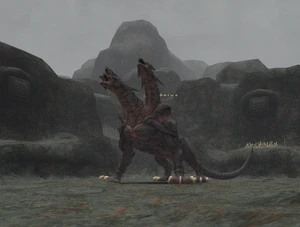

Level 75 reference · Zenith rules
|
Job: Notorious Monster |
 |

|
Zone |
Level |
Drops |
Steal |
Spawns |
Notes |
|
85 |
A, T(H) | ||||
| Nyzul Isle Investigation (Floor 60) | 1 | A, T(H) | |||
| Nyzul Isle Investigation (Floor 80) | 1 | A, T(H) | |||
| Nyzul Isle Investigation (Floor 100) | 1 | A, T(H) | |||
|
HP = Detects Low HP; M = Detects Magic; Sc = Follows by Scent; T(S) = True-sight; T(H) = True-hearing JA = Detects job abilities; WS = Detects weaponskills; Z(D) = Asleep in Daytime; Z(N) = Asleep at Nighttime | |||||

Notes:
- Spawns behind the Gates of Halvung (opened with a Cast Metal Plate) at (I-8). Respawn time is 48 to 72 hours after death. During this period, spawn chances occur in one hour intervals.
- Uses 20' massive damage AoE move called Gates of Hades at the last 25% of it's life. About 1/3 of his TP moves will be this and can be stunned.
- Resistant to Elemental Magic, but susceptible to melee damage and Avatars.
- Always drops 1 Cerberus Meat, 2 Cerberus Claws and 1 Cerberus Hide.
- Barfira is reported to significantly reduce Magma Hoplon spikes damage.
- 200+ ice resist and Barparalyzra are reported to prevent paralysis from Ululation.
- All TP attacks except Lava Spit seem to be stunnable.
Special attacks:
- Lava Spit - AoE Fire damage.
- Sulfuric Breath - Single target Fire damage.
- Ululation - AoE Paralyze.
- Magma Hoplon - Stoneskin plus potent Blaze Spikes effect.
- Scorching Slash - Powerful Backwards Cone Attack (Only used when hate is pulled from behind.)
- Gates of Hades - Exceptionally powerful AoE Fire damage and potent Burn effect (40 HP /tick). Can only be used when HP is 25% and under.
- Gates of Hades should be stunned using the Stun spell. Blue Mage's Head Butt and bash effects, like Shield Bash, will not work.
Strategy Notes:
- Should be tanked from the front as Scorching Lash can potentially one-shot tanks with missing shadows.
- Attacks fast due to Triple Attack. Taking turns with Elemental Seal + Slow or Slow II is useful for helping tanks keep shadows.
- Mages resting should do so outside of 20' to dodge Paralyze from Ululation and reduce extra casts of Paralyna.
- Recommended 3 Stunners MINIMUM. More is safer.
- At 25% Cerberus will begin to use Gates of Hades when it gets TP. The cast time is long enough to stun fairly easily, however lag from competing linkshells or even your own alliance can easily allow Gates of Hades to go off even if your stun appears in log window to go through. It is especially dangerous because Cerberus can use a second Gates of Hades immediately after you stun its first.
- Being hit with Gates of Hades will usually kill 4-18 people in your alliance depending on luck and resists. Being hit twice in a row will wipe your alliance. In the event of getting hit with Gates of Hades you should focus immediately on healing tanks and calling out which stunners are still alive. Stunners should focus entirely on stunning and nothing else when it is their turn.
Adapted from Eden Wiki: Cerberus · Contributors and history · CC BY-SA 4.0. Revision 46913. Layout, links and optional background text adapted for Zenith.